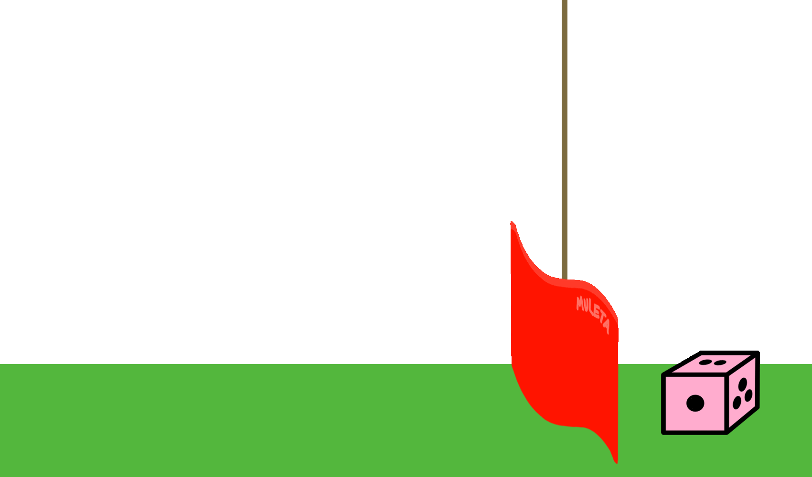

猪的游戏¶
简介¶
按顺序尝试问题，包括每次完成问题后运行
ok测试，因为后续的一些问题会依赖于早期的实现。
在这个项目中，你需要为骰子游戏 Hog 来开发一个模拟器，并在其中实现多种策略。你需要结合使用*控制语句*和*高阶函数*，正如《组合程序》第1.2节到1.6节中所述。
在尝试实现功能时，没有仔细阅读问题的学生经常会遇到问题。😱 所以在开始编码之前，请仔细阅读问题的描述。
规则¶
在Hog游戏中，两名玩家轮流进行，首先在回合结束时获得 GOAL 以上总分的玩家获胜，其中 GOAL 默认为100。每个回合中，当前玩家可以选择一些骰子一起掷，骰子一次性最多选择10个。该玩家的回合得分等于骰子结果的和。然而，掷太多骰子也有风险：
- ”猪的悲伤“（Sow Sad）规则：如果有任何一个骰子的结果是1，那么当前玩家的回合得分为
1，无论其他骰子的值是多少。
例子
- 示例 1：当前玩家掷了 7 颗骰子，其中有 5 颗是 1。所以他们这一轮得分为 1 分。
- 示例 2：当前玩家掷了 4 个骰子，全部都是 3。由于没有触发 Sow Sad 规则，所以他们在这一轮中得分为 12 分。
在一场正常的Hog游戏中，这些就是所有的规则了。为了让游戏更有趣一点，我们再加入一些特殊规则：
- “野猪混战”（Boar Brawl）规则：若玩家选择掷零个骰子，那么他将获得：对手总分的十位数 与 当前玩家总分的个位数 之差的绝对值的3倍，或者获得1分，两者需要取较大值。
例子
-
示例 1
- 当前玩家有
21分，对手有46分，并且当前玩家选择掷零个骰子。 - 那么，对手得分的十位数就是
4，而当前玩家得分的个位数是1。 - 因此，玩家获得
3 * abs(4 - 1) = 9分。
- 当前玩家有
-
示例 2
- 当前玩家有
45分，对手有52分，并且当前玩家选择掷零个骰子。 - 那么，对手得分的十位数就是
5，而当前玩家得分的个位数是5。 - 由于
3 * abs(5 - 5) = 0，玩家获得1分。
- 当前玩家有
-
示例 3
- 当前玩家有
2分，对手有5分，并且当前玩家选择掷零个骰子。 - 那么，对手得分的十位数就是
0，而当前玩家得分的个位数是2。 - 因此，玩家获得
3 * abs(0 - 2) = 6分。
- 当前玩家有
- “野猪恐慌”（Sus Fuss）规则：如果一个数正好有3个或4个因数（包括1和它本身），我们就称这个数为猪数（sus number）。如果投掷后当前玩家的得分是猪数，则得分就增加到当前得分以上最近的质数。
例子
-
示例 1
- 一位玩家有 14 分，掷出两个骰子获得了 7 分。那么他的新分数就会是 21，而 21 有 4 个因数：1、3、7 和 21。由于 21 是猪数，因此玩家的分数立即增加到 23（离得最近的下一个质数）。
-
示例 2
- 一位 63 分的玩家掷出了五个骰子，然后在这一轮中只获得了 1 分。他们的新分数就会是 64（猪的悲伤😢），64 有 7 个因数：1、2、4、8、16、32 和 64。由于 64 不是猪数，玩家的分数保持不变。
-
示例 3
- 一名玩家有 49 分，掷了 5 个骰子，总分为 18 分。他的新分数会是 67，而这是一个质数，它有 2 个因数：1 和 67。但由于 67 不是猪数，玩家的分数保持不变。
下载启动文件¶
为了开始项目，请将项目的所有代码下载为一个zip存档文件。解压缩后的文件列表如下。对于这个项目，你只需要修改 hog.py 。
hog.py: Hog的初始实现dice.py: 制作骰子和掷骰子的函数hog_gui.py: Hog的图形用户界面（GUI）（已更新）ucb.py: CS61A的工具函数hog_ui.py: Hog的文本用户界面（UI）ok: CS61A的自动评分器tests:ok使用的测试目录gui_files: Web GUI需要使用的各种东西的目录
你可能会发现除了上面列出的文件以外，还有其他文件。那些是让自动评分器和GUI部分正常工作的文件。所以，请不要修改任何除了 hog.py 以外的文件。
课程安排（有删减）¶
不能使用AI来帮助你完成这个项目，也不能参考在网上找到的解决方案。
对于我们要求你完成的函数，我们可能会提供一些初始代码。如果你不想使用这些代码，可以自行删除然后从头开始写。或者你也可以根据需要，添加新的函数定义。
但是，请不要修改任何其他函数，或者编辑上述文件之外的任何文件。 这可能会导致你的代码在我们的自动评分器测试中运行失败。另外，请不要更改任何函数签名（名称、参数顺序或参数数量）。
在整个项目中，你应该测试你的代码的正确性。经常测试是一个好习惯，这样更容易将问题隔离。但是，为留出时间多思考问题，你不应该测试得太频繁。
我们提供了一个名为 ok 的自动评分器来帮助你测试代码。
ok 的主要目的是测试你的实现。
如果你想交互式地测试你的代码，你可以运行：
python3 ok -q [question number] -i
添加适当的问题编号（例如 01 ）来使用。这将运行该问题的测试，直到第一次运行失败，然后就可以交互式地测试你编写的函数。
你也可以通过在ok中编写：
print("DEBUG:", x)
这将在你的终端中产生输出，而不会因为额外的输出，导致ok测试失败。
图形用户界面¶
我们为你提供了一个图形用户界面（简称 GUI）。但目前它还无法工作，因为还没有实现游戏逻辑。一旦完成了play函数，你就能够玩一个完全交互式的Hog版本！
完成之后，你可以从终端运行GUI，然后在浏览器中玩Hog：
python3 hog_gui.py
第一阶段：游戏规则¶
问题 0（0分）¶
dice.py 文件使用非纯且零参数的函数来表示骰子。由于每次调用时，这些函数都可能返回不同的值，所以这些函数是非纯的。因此调用这些函数的一个副作用是改变下次调用函数时返回的内容。
为了便于你在这个项目中模拟骰子，这里给出你需要阅读的 dice.py 文档。
骰子函数不接受任何参数，并且它返回一个从1到n（闭区间）的数字，其中n是骰子的面数。
公平的骰子需要以相等的概率产生每种可能的结果。
这里已经定义了两个公平的骰子，分别是四面骰和六面骰，它们是通过make_fair_dice函数生成的。
def make_fair_dice(sides):
"""返回一个生成从1到SIDES的值的骰子，每个值有相等的可能性。"""
...
four_sided = make_fair_dice(4)
six_sided = make_fair_dice(6)
用于测试的骰子是具备确定性的：因为它们一定会遍历一个固定的值序列，而这些值是作为参数被传入的。
测试骰子是由make_test_dice函数生成的。
def make_test_dice(...):
"""返回一个可以确定性地遍历结果（OUTCOMES）的骰子。"""
>>> dice = make_test_dice(1, 2, 3)
>>> dice()
1
>>> dice()
2
>>> dice()
3
>>> dice()
1
>>> dice()
2
通过解锁以下测试用例来检查你的理解：
python3 ok -q 00 -u
可以通过输入 exit() 退出解锁器。
已知在 Windows 上按 Ctrl-C 退出解锁器会导致问题，因此要避免这样做。
问题 1（2 分）¶
在 hog.py 中实现 roll_dice 函数。该函数需要接受两个参数：一个正整数 num_rolls ，用来指定掷骰子的次数，以及一个 dice 函数。该函数返回一个点数，这个点数是在回合中掷骰子 num_rolls 次的得分：要么是结果的和，要么是 1（Sow Sad规则）。
- ”猪的悲伤“（Sow Sad）规则：如果有任何一个骰子的结果是1，那么当前玩家的回合得分为
1，无论其他骰子的值是多少。
例子
- 示例 1：当前玩家掷 7 颗骰子，其中 5 颗是 1。他们这一轮得分为
1分。 - 示例 2：当前玩家掷了 4 个骰子，全部都是 3。由于没有触发 Sow Sad 规则，他们在这一轮中得分为
12分。
要获得一次掷骰子的结果，请调用 dice() 。你应该在 roll_dice 的函数体中 恰好调用 num_rolls 次 dice() 。
请记住，即使在中途触发Sow Sad规则的情况下，也要恰好调用 dice() 次 num_rolls 。这样做才能正确模拟掷所有骰子（用户界面也才会正常工作）。
注意：
roll_dice函数，以及整个项目中许多其他函数，都使用了默认参数值——你可以在函数头中看到这一点。def roll_dice(num_rolls, dice=six_sided): ...参数
dice=six_sided表示roll_dice函数中的dice参数是可选的。如果没有给dice提供值，则默认使用six_sided。例如，调用
roll_dice(3, four_sided)将模拟掷3个四面骰子，而调用roll_dice(3)由于默认参数将模拟掷3个六面骰子。
理解问题：
在编写任何代码之前，请解锁测试用例来验证你对问题的理解：
python3 ok -q 01 -u
注意：在解锁相应问题的测试用例之后，你才能使用
ok测试你的代码。
编写代码并检查你的工作：
解锁测试用例后，开始实现你的解决方案。你可以通过以下方式检查你的正确性：
python3 ok -q 01
调试技巧
请查看 调试指南！
调试技巧
如果测试没有通过，那就到调试的时候了。你可以直接使用 Python 来观察你的函数的行为。首先，启动 Python 解释器并加载 hog.py 文件。
python3 -i hog.py然后，你可以调用你的 roll_dice 函数，并传入任何你想要的骰子数量作为参数。
>> roll_dice(4)你会发现在每次调用时，之前的表达式都可能会有不同的结果，因为它是在模拟随机骰子投掷。你也可以使用固定了骰子结果的测试骰子。比如，当你知道骰子会显示 3 和 4 时，两次投掷的总结果应该是 7。
>> fixed_dice = make_test_dice(3, 4)
>>> roll_dice(2, fixed_dice)
7在大多数系统上，你可以通过按上箭头键，然后按回车键或者返回键，来重新计算相同的表达式。若要重新计算先前的命令，请反复按上箭头键。
如果你发现了一个问题，那么你首先需要更改你的
hog.py文件来修复问题，再保存文件。然后，为了检查你的修复是否有效，你必须使用exit()或Ctrl+D退出 Python 解释器，再重新运行解释器来测试你的更改。即使重新启动了 Python，在终端和 Python 解释器中按上箭头键都应该可以访问你以前输入过的表达式。继续调试你的代码并运行
ok测试，直到测试全部通过。另一个调试技巧：为了在
ok测试失败时，可以自动启动交互式解释器，请使用-i。例如，python3 ok -q 01 -i将运行问题 1 的测试，如果测试失败，就会将hog.py加载到交互式解释器中运行。
问题 2（2分）¶
实现 boar_brawl ，它接受玩家的当前分数 player_score 和对手的当前分数 opponent_score ，并返回当玩家掷0个骰子且Boar Brawl规则被触发时获得的分数。
- “野猪混战”（Boar Brawl）规则：若玩家选择掷零个骰子，那么他将获得：对手总分的十位数 与 当前玩家总分的个位数 之差的绝对值的3倍，或者获得1分，两者需要取较大值。
例子
-
示例 1
- 当前玩家有
21分，对手有46分，并且当前玩家选择掷零个骰子。 - 那么，对手得分的十位数就是
4，而当前玩家得分的个位数是1。 - 因此，玩家获得
3 * abs(4 - 1) = 9分。
- 当前玩家有
-
示例 2
- 当前玩家有
45分，对手有52分，并且当前玩家选择掷零个骰子。 - 那么，对手得分的十位数就是
5，而当前玩家得分的个位数是5。 - 由于
3 * abs(5 - 5) = 0，玩家获得1分。
- 当前玩家有
-
示例 3
- 当前玩家有
2分，对手有5分，并且当前玩家选择掷零个骰子。 - 那么，对手得分的十位数就是
0，而当前玩家得分的个位数是2。 - 因此，玩家获得
3 * abs(0 - 2) = 6分。
- 当前玩家有
不要假定分数低于 100。编写你的
boar_brawl函数，让它能够正确处理任何非负分数。重要提示：你的实现不应该使用
str、列表或包含方括号[]。测试用例将检查这些是否被使用。
在编写任何代码之前，解锁测试用例以验证你对问题的理解：
python3 ok -q 02 -u
解锁完成后，开始实现你的解决方案。你可以通过以下方式检查你的正确性：
python3 ok -q 02
你也可以通过从终端运行 python3 -i hog.py 并调用 boar_brawl 在各种输入上交互式地测试 boar_brawl 。
问题 3 (2分)¶
实现 take_turn 函数，该函数通过掷 dice num_rolls 次骰子来返回一回合的得分。
你的实现中应该调用 take_turn 和 roll_dice 函数，而不是重复实现它们。
在编写任何代码之前，解锁测试以验证你对问题的理解：
python3 ok -q 03 -u
解锁完成后，开始实现你的解决方案。你可以通过以下方式检查你的正确性：
python3 ok -q 03
问题 4（2分）¶
首先，实现 num_factors ，它接收一个正整数 n 并确定 n 有多少个因数。
1 和
n都是n的因数！
接着，实现 sus_points 和 sus_update 。
sus_points接收一个玩家的分数并返回触发Sus Fuss规则后的玩家新分数，就算分数保持不变。例如，sus_points(5)应该返回5，sus_points(21)应该返回23。你应该使用num_factors和我们提供的is_prime函数来实现。sus_update返回玩家投掷num_rolls颗骰子后的总得分，同时也考虑了Boar Brawl和Sus Fuss规则。在这个函数中，你应该使用sus_points。
提示：
- 你可以看看
hog.py中提供的simple_update实现，你可以将它作为sus_update函数的起点。- 记住，
take_turn内部已经考虑了Boar Brawl规则！
- “野猪恐慌”（Sus Fuss）规则：如果一个数正好有3个或4个因数（包括1和它本身），我们就称这个数为猪数（sus number）。如果投掷后当前玩家的得分是猪数，则得分就增加到当前得分以上最近的质数。
例子
-
示例 1
- 一位玩家有
14分，掷出两个骰子获得了7分。那么他的新分数就会是21，而 21 有 4 个因数：1、3、7 和 21。由于 21 是猪数，因此玩家的分数立即增加到 23（离得最近的下一个质数）。
- 一位玩家有
-
示例 2
- 一位
63分的玩家掷出了五个骰子，然后在这一轮中只获得了1分。他们的新分数就会是64（猪的悲伤😢），64 有 7 个因数：1、2、4、8、16、32 和 64。由于 64 不是猪数，玩家的分数保持不变。
- 一位
-
示例 3
- 一名玩家有
49分，掷了 5 个骰子，总分为18分。他的新分数会是67，而这是一个质数，它有 2 个因数：1 和 67。但由于 67 不是猪数，玩家的分数保持不变。
- 一名玩家有
在编写任何代码之前，解锁测试以验证你对问题的理解：
python3 ok -q 04 -u
解锁完成后，开始实现你的解决方案。你可以通过以下方式检查你的正确性：
python3 ok -q 04
问题 5（4分）¶
实现 play 函数，该函数模拟一整局Hog游戏。玩家轮流掷骰子，直到其中一个玩家达到 goal 分数。然后函数返回两个玩家的最终得分。
要确定每回合掷多少骰子，请调用当前玩家的策略函数（玩家0使用 strategy0 ，玩家1使用 strategy1 ）。这里的一个*策略*是指一个函数，它接受玩家的分数和对手的分数，然后返回当前玩家在该回合需要掷的骰子数。上面出现的 always_roll_5 就是一个简单策略的示例。
要确定玩家在回合结束后要更新的分数，请调用 update 函数。一个 update 函数接受掷骰子的数量、当前玩家的分数、对手的分数以及用于模拟掷骰子的骰子函数。它返回当前玩家在回合结束后要更新的分数。 simple_update 和 sus_update 是两个 update 函数的示例。记住，这个update函数会返回玩家回合后的总分，而不仅仅只是分数的改变。
当玩家在应用所有适用规则后，且在其回合结束时达到或超过目标分数时，游戏结束。 play 将返回两位玩家的最终总分，玩家0的分数在前，玩家1的分数在后。
调用 play 的一些示例：
play(always_roll_5, always_roll_5, simple_update)模拟两名玩家，每回合都掷5个骰子，仅使用Sow Sad和Boar Brawl规则进行游戏。play(always_roll_5, always_roll_5, sus_update)模拟两名玩家，每回合都掷5个骰子，除了Sow Sad和Boar Brawl规则外，还使用Sus Fuss规则（即所有规则）。
重要提示：为了使用户界面正常工作，每次回合应只调用一次策略函数。仅在玩家 0 的回合中调用
strategy0，仅在玩家 1 的回合中调用strategy1。提示：
- 如果
who是当前玩家，那么下一个玩家就是1 - who。- 如果要调用
play(always_roll_5, always_roll_5, sus_update)并打印出每一步发生的情况，请从终端运行python3 hog_ui.py。
在编写任何代码之前，解锁测试以验证你对问题的理解：
python3 ok -q 05 -u
解锁完成后，开始实现你的解决方案。你可以通过以下方式检查你的正确性：
python3 ok -q 05
检查一下，确保你已经完成了第一阶段的全部问题：
python3 ok --score
当你运行 ok 命令时，你会看到一些测试仍被锁定，这是因为你还没有完成整个项目。如果你完成了到此为止的所有问题，你将获得检查点的全额积分。
恭喜！你已完成此项目的第一阶段！
插曲：用户界面¶
项目的这个部分没有必做题，就只有一些供你阅读和理解的示例。阅读项目的剩余问题，请查看第二阶段。

动画由 Tristan & Tyler Roath 创作
打印游戏内的事件¶
我们为游戏构建了一个模拟器，但是还没有添加任何代码，来描述游戏事件应该怎么对人显示。因此，我们构建了一个无人能玩的电脑游戏。（太无聊了！）
然而，模拟器是以小型函数的形式来表达的，我们可以用新的函数版本来替换每个函数，这个新版本可以打印出调用时发生的事情的。通过使用这样的高阶函数，我们才能在不改变大部分原始代码的情况下做到这种效果。在 hog_ui.py 有一个例子，我们鼓励你去阅读它。
play_and_print 函数调用了刚刚实现的相同 play 函数，但是却使用了：
- 新的策略函数（例如，
printing_strategy(0, always_roll_5)），用于输出分数和掷骰子的次数。 - 新的更新函数（
sus_update_and_print），用于输出每轮的结果。 - 新的掷骰子函数（
printing_dice(six_sided)），用于输出掷骰子的结果。
注意一下有多少模拟器的原始代码可以被重用。
从终端运行 python3 hog_ui.py 会调用 play_and_print(always_roll_5, always_roll_5) 。
接受用户输入¶
python内置的 input 函数可以等待用户输入一行文本，然后将其作为字符串返回。内置的 int 函数可以接受一个包含整数数字的字符串并返回该整数。
interactive_strategy 函数返回一个策略，通过调用 input ，允许一个玩家来选择每轮掷多少个骰子。
在终端运行 python3 hog_ui.py -n 1 时，会调用 play_and_print(interactive_strategy(0), always_roll_5)，这个指令创建了一个人类玩家（玩家0）和一个每次都选择掷5个骰子的电脑策略之间的对战游戏。
在终端中运行 python3 hog_ui.py -n 2 命令会调用 play_and_print(interactive_strategy(0), interactive_strategy(1))，从而在两个人类玩家之间进行一局游戏。
你可以随意更改 hog_ui.py ，比如使用和 always_roll_5 不一样的策略。
图形用户界面（GUI）¶
我们还为游戏提供了一个基于Web的图形用户界面，其实现方式与 hog_ui.py 类似，叫做 hog_gui.py 。你可以通过终端运行该界面：
python3 hog_gui.py
就像 hog_ui.py 一样，GUI依赖于你的模拟器实现，因此如果你代码中存在任何错误，这些错误也会反映在GUI中。这意味着你也可以使用GUI作为调试工具；不过，最好先运行测试。
Hog GUI的源代码在Github上公开可用，但涉及几种其他编程语言：JavaScript、HTML和CSS。
第二阶段：策略¶
在这一阶段，你将会尝试改进始终掷五颗骰子的 always_roll_five 简单策略。策略是一个函数，它接受两个参数：当前玩家的得分和对手的得分。然后它会返回玩家将掷出的骰子数量，范围从0到10（闭区间）。
问题 6（2分）¶
实现 always_roll ，这是一个高阶函数，它接受一个骰子数量 n ，然后返回一个总是掷 n 个骰子的策略函数。所以 always_roll(5) 就等同于 always_roll_5 。
在编写任何代码之前，解锁测试以验证你对问题的理解：
python3 ok -q 06 -u
解锁完成后，开始实现你的解决方案。你可以通过以下方式检查你的正确性：
python3 ok -q 06
问题 7（2分）¶
策略函数中，参数值的数量是固定多的。例如，在一个 goal 为100的游戏里，只有100个可能的 score 值（0-99）和100个可能的 opponent_score 值（0-99），这导致1个策略函数就会有10,000种可能的参数组合。
| 玩家得分 | 对手得分的组合 |
|---|---|
| 0 | (0,0), (0,1), (0,2), ..., (0,99) |
| 1 | (1,0), (1,1), (1,2), ..., (1,99) |
| 2 | (2,0), (2,1), (2,2), ..., (2,99) |
| ... | ... |
| 98 | (98,0), (98,1), (98,2), ..., (98,99) |
| 99 | (99,0), (99,1), (99,2), ..., (99,99) |
实现 is_always_roll ，它接受一个策略函数，然后返回：在每种可能的参数组合中，该策略是否总是能投掷相同数量的骰子，其中每个得分最多为 goal 分。
提示：某位玩家达到
goal分后，游戏才会停止（虽然在上面的例子中goal被设为100，但它可以是任何数字）。为了满足特定的goal，在你的解决方案中，你需要保证考虑了score和opponent_score的所有可能组合。
在编写任何代码之前，解锁测试以验证你对问题的理解：
python3 ok -q 07 -u
解锁完成后，开始实现你的解决方案。你可以通过以下方式检查你的正确性：
python3 ok -q 07
问题 8（2分）¶
实现 make_averaged ，这是一个高阶函数，它接受一个函数 original_function 作为参数。
make_averaged 的返回值是一个函数，该函数接受与 original_function 相同的参数。当使用特定参数调用该函数时，它应该在这些相同参数上重复调用 original_function （调用次数为 times_called 次），并返回结果的平均值。请查看 make_averaged 的doctest。务必注意跟踪传入函数的值！
Doctest 分步解析： 仔细查看
make_averaged的doctest。本例中original_function被赋值为roll_dice。请注意这行代码averaged_dice(1, dice)。这暗示着roll_dice的输入参数应为(1, dice)（想想为什么！），观察averaged_dice是如何接收与roll_dice相同的参数。这些参数并非直接传递给roll_dice，而是传递给averaged_dice。（思考这是如何实现的！）请谨记，make_averaged需要兼容任何与返回函数具有相同参数结构的original_function。在此示例中，投掷单个骰子被视为一次采样（roll_dice(1, dice)）。由于times_called被设置为40，这一采样过程会被重复执行40次。最终make_averaged函数将计算这40次roll_dice调用的平均结果。重要提示：要实现此功能，你需要使用一项新的Python语法特性。我们需要编写一个能够接收任意数量参数的函数，并精准使用这些参数来调用另一个函数。其工作原理如下。
定义函数时，无需一一列出形式参数（formal parameters），你可以直接使用*args来接收传入的所有实际参数（arguments）。这样我们就能直接将这些参数原封不动地传递给其他函数进行调用。例如：
>>> def printed(f): ... def print_and_return(*args): ... result = f(*args) ... print('Result:', result) ... return result ... return print_and_return >>> printed_pow = printed(pow) >>> printed_pow(2, 8) # *args代表了参数(2, 8) Result: 256 256 >>> printed_abs = printed(abs) >>> printed_abs(-10) # *args代表了参数(-10) Result: 10 10在这里，我们可以通过*args语法向
print_and_return传递任意数量的参数。我们还可以在print_and_return函数内部使用*args语法，用相同的参数进行另一个函数调用。
在编写任何代码之前，解锁测试以验证你对问题的理解：
python3 ok -q 08 -u
解锁完成后，开始实现你的解决方案。你可以通过以下方式检查你的正确性：
python3 ok -q 08
问题 9（2分）¶
实现 max_scoring_num_rolls ，它使用一个具有固定面数的骰子来运行实验，以确定（从 1 到 10）给出每轮最大平均分数的投掷次数。你的实现应该使用 make_averaged 和 roll_dice 。
如果两个投掷次数的分数相同，则返回较小的数字。例如，如果 3 和 6 都达到了相同的最大平均分数，则返回 3。
在进行解锁测试之前，你可能觉得阅读这个问题的 doctest 以及 make_averaged （问题 8）会很有用。
重要提示：为了通过我们所有的测试，请确保你测试骰子投掷是从1到10，而不是从10到1。
在编写任何代码之前，解锁测试以验证你对问题的理解：
python3 ok -q 09 -u
解锁完成后，开始实现你的解决方案。你可以通过以下方式检查你的正确性：
python3 ok -q 09
运行实验¶
提供的 run_experiments 函数会调用 max_scoring_num_rolls(six_sided) 并打印结果。你会发现使用六面骰子时，掷6个骰子可以最大化 roll_dice 的结果。
要调用此函数并查看结果，请运行 hog.py 并使用 -r 标志：
python3 hog.py -r
此外，run_experiments 函数会将各种策略与 always_roll(6) 进行比较。你可以随意更改 run_experiments 函数的实现。请注意，在接下来的两个问题中实现 boar_strategy 和 sus_strategy 之前，使用它们运行实验不会得到准确的结果。
部分实验可能需要长达一分钟才能完成。你随时可以通过在调用make_averaged时减少试验次数来加快实验速度。
运行实验不会影响你的项目得分。
问题 10 (2分)¶
有一种策略是在收益最大时，通过掷0次骰子来利用Boar Brawl规则。请实现 boar_strategy 函数：当掷0次骰子**至少**可以取得 threshold 分时才返回0，否则返回给定的掷骰次数。该策略**不应该**考虑Sus Fuss规则。
提示：你可以使用你在问题 2 中定义的
boar_brawl函数。
在编写任何代码之前，解锁测试以验证你对问题的理解：
python3 ok -q 10 -u
解锁完成后，开始实现你的解决方案。你可以通过以下方式检查你的正确性：
python3 ok -q 10
你应该能发现目前运行 python3 hog.py -r 时，显示 boar_strategy 的胜率接近 66-67%。
问题 11 (2分)¶
更好的策略会结合利用Boar Brawl和Sus Fuss规则。例如，如果一个玩家有53分，而他们的对手有60分，掷出0将使他们达到62分，而这是一个猪数，因此他们将在本回合结束时获得67分：收益为67-53=14！
当掷出0导致得分至少比回合开始时玩家的得分多 threshold 分时， sus_strategy 会返回0。
提示：你可以使用在问题4中定义的
sus_update函数。
在编写任何代码之前，解锁测试以验证你对问题的理解：
python3 ok -q 11 -u
解锁完成后，开始实现你的解决方案。你可以通过以下方式检查你的正确性：
python3 ok -q 11
你应该能发现目前运行 python3 hog.py -r 时，显示 boar_strategy 的胜率接近 67-69%。
问题 11（0分）
请编写 final_strategy 函数，该函数需综合上述思路以及你所能想到的其他方法，以实现针对基准策略的高胜率。
- 如果你知道目标分数（默认为100），超过该分数并无额外优势。检查你是否可以通过掷0、1或2个骰子获胜。如果处于领先地位，你可能会决定去采取更为保守的策略。
- 与其设定一个阈值，不如在平均收益高于掷出6点的情况下选择得0分。
你可以通过运行 ok 来检查你的最终策略是否有效。
python3 ok -q 12
项目提交（有删减）¶
在所有问题上运行 ok 以确保所有测试都已解锁并通过：
python3 ok
你也可以检查项目每个部分的得分：
python3 ok --score